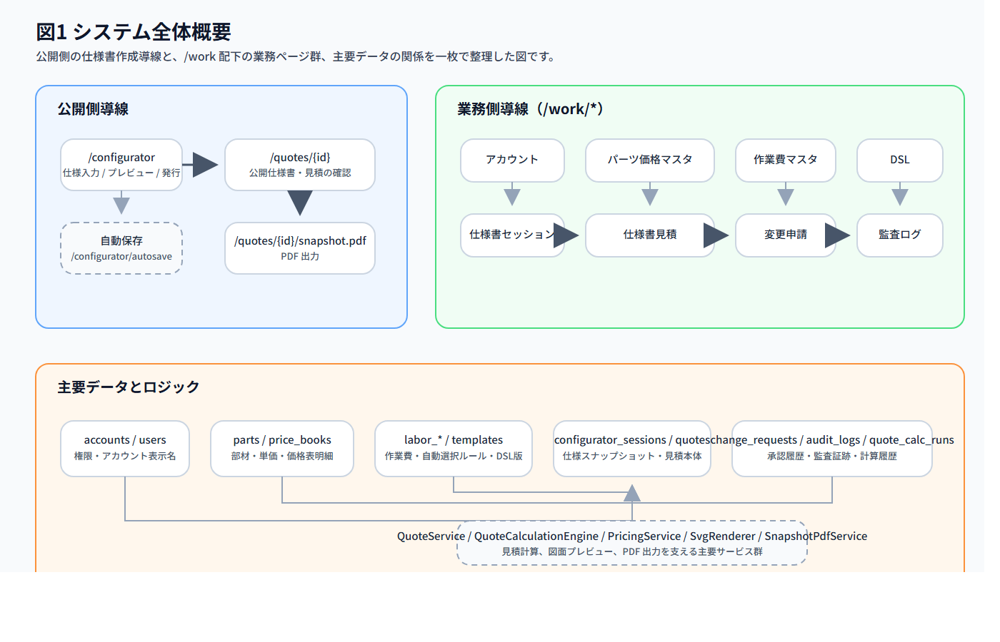
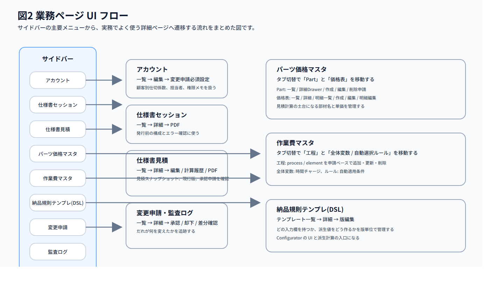
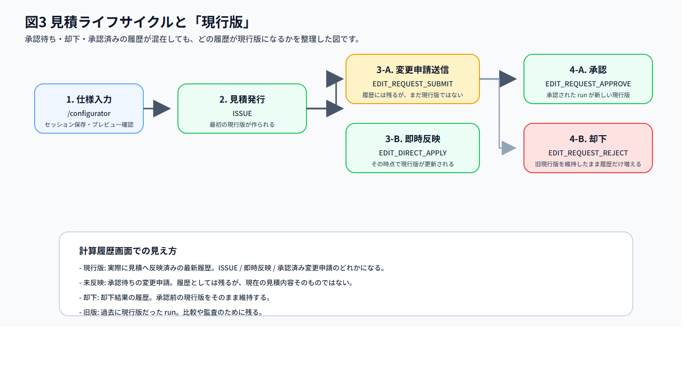
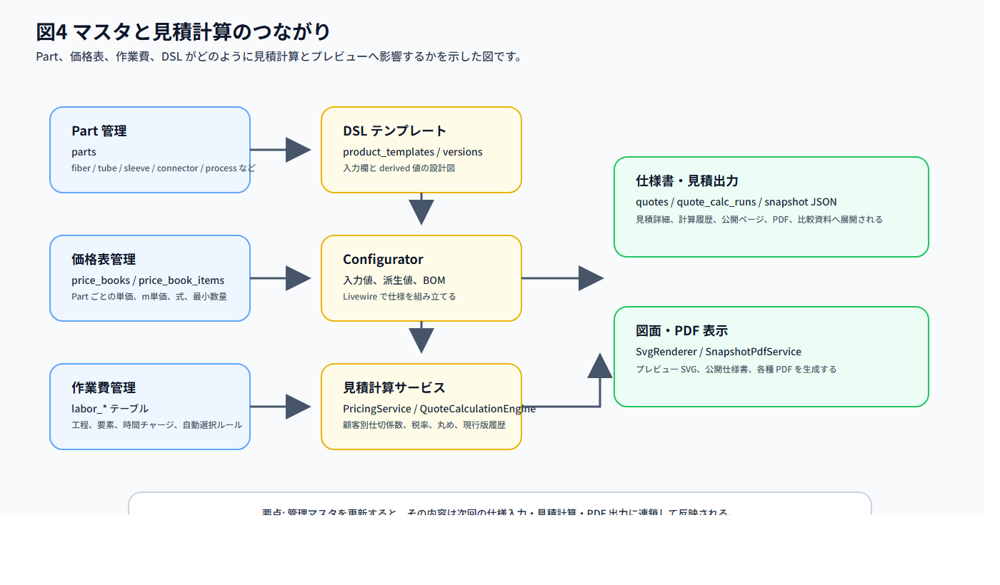
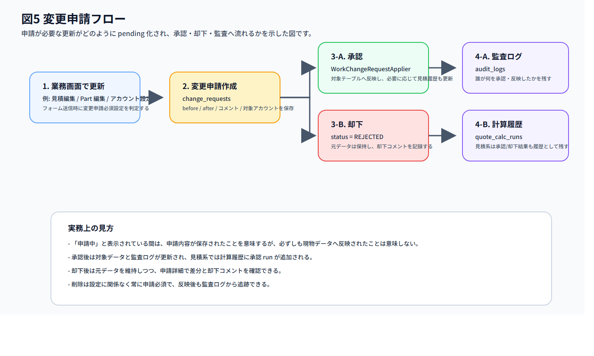
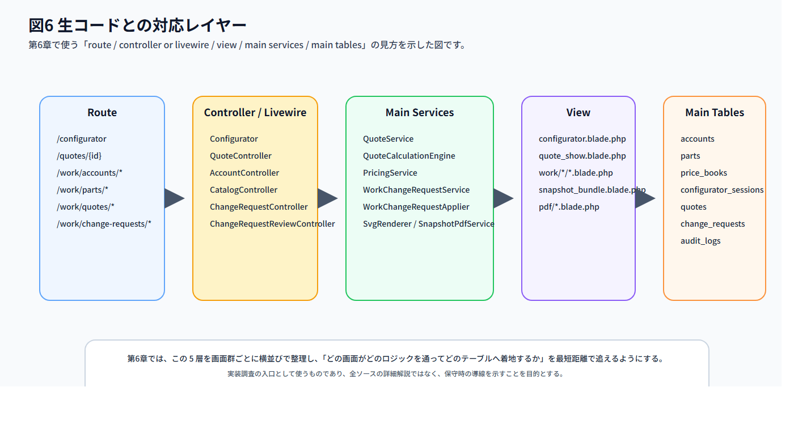

| 項目 | 内容 |
|---|---|
| 文書名 | Deltafiber受注販管システム Webアプリ説明書 |
| 版数 | 第1版 |
| 作成日 | 2026-03-25 |
| 想定読者 | 運用担当者、営業担当者、承認担当者、保守担当者 |
| 対象範囲 | 公開側 /configurator と /quotes/*、業務側 /work/*、ユーザー設定 |
| 利用前提 | ログイン済みであること。業務ページは admin または sales 相当の権限を前提とする |
| Word 対応 | 17_Webアプリ説明書_Word用.html を Microsoft Word で直接開ける版として同梱する |
| 図版について | 図版は PNG を配布用に同梱し、元データの SVG も保持している。Word 版を開くときも assets/web_app_manual/ を同じ相対配置で維持すること |
本書は、日常運用で迷わず操作するための実務マニュアルとして作成しています。
前半は「何の画面で何をするか」を理解するための利用者向け説明、後半は「どのコードとどのテーブルに対応するか」を追うための保守向け説明です。
まずは第1章と第2章で全体像を把握し、日常操作は第3章と第4章、トラブル時は第5章、コード調査時は第6章を参照してください。
本システムは、光ファイバ構成の仕様入力から、仕様書・見積・変更申請・監査までを一つの流れで扱う Web アプリです。
利用者の視点では「公開側で仕様を作る流れ」と「業務側でマスタ、見積、承認、監査を回す流れ」に分かれます。
まずは、どの画面がどの役割を担っているかを俯瞰してください。
| 区分 | 主な URL | 主な役割 |
|---|---|---|
| 公開側 | /configurator | ファイバ、チューブ、コネクタなどを選び、仕様書を発行する |
| 公開側 | /quotes/{id} | 発行済み仕様書・見積を確認する |
| 公開側 | /quotes/{id}/snapshot.pdf | 発行済み仕様書・見積を PDF で出力する |
| 業務側 | /work/accounts/* | アカウント、担当者、顧客別仕切係数、変更申請必須設定を管理する |
| 業務側 | /work/parts/*, /work/price-books/* | Part と価格表を管理する |
| 業務側 | /work/labor-costs/* | 作業費、工程、ルールを管理する |
| 業務側 | /work/templates/* | DSL テンプレートと版を管理する |
| 業務側 | /work/sessions/* | 発行前の仕様セッションを確認する |
| 業務側 | /work/quotes/* | 発行後の見積、計算履歴、変更申請を扱う |
| 業務側 | /work/change-requests/* | 変更申請の承認・却下・差分確認を行う |
| 業務側 | /work/audit-logs/* | 監査証跡を追う |
| 利用者 | 主に使う画面 | 主な目的 |
|---|---|---|
| 顧客・営業の公開利用者 | /configurator, /quotes/{id} | 仕様入力、見積確認、PDF 取得 |
| 営業・運用担当者 | /work/quotes/*, /work/sessions/*, /work/accounts/* | 見積確認、顧客条件設定、申請状況確認 |
| マスタ管理担当者 | /work/parts/*, /work/price-books/*, /work/labor-costs/*, /work/templates/* | 見積根拠となるマスタ更新 |
| 承認担当者 | /work/change-requests/* | 変更申請の承認・却下 |
| 保守担当者 | 第6章の対応表 | route、controller、service、table の対応確認 |

図1では、公開側の仕様入力と、業務側の各メニュー、さらに見積計算を支える主要テーブルとサービスの関係を示しています。
実務では「見積だけを見る」「価格表だけを更新する」と感じやすいですが、実際には各画面はひと続きの流れでつながっています。
/configurator は仕様入力の入口です。/quotes/{id} と /quotes/{id}/snapshot.pdf は、ログイン済みかつ当該アカウントに紐づく利用者だけが参照できます。/work/* 配下は、業務権限を持つ利用者向けです。サイドバーもこの権限に応じて表示されます。| データ | どこで作るか | どこで使うか |
|---|---|---|
config | /configurator | プレビュー、セッション、見積スナップショット |
derived | DSL と Configurator | SVG 表示、仕様書表示、PDF |
| Part | Parts 画面 | Configurator の選択肢、価格表、BOM、見積明細 |
| 価格表 | 価格表画面 | 見積計算の単価決定 |
| 作業費ルール | 作業費管理 | QuoteCalculationEngine の作業費計算 |
| 顧客別仕切係数 | アカウント画面 | 当該アカウントの見積既定値 |
| 変更申請 | 各編集画面 | 承認・却下、見積履歴、監査ログ |
| 計算履歴 | 見積更新時 | 現行版判定、見積比較、承認結果の追跡 |
注意
本システムは「仕様書入力アプリ」ではなく、「見積根拠の再現性を保つための運用システム」です。
そのため、Part、価格表、作業費、DSL のいずれかを変えると、次回の仕様入力や見積結果にも影響します。
業務ページは、左サイドバーのメニューから横断的に使います。
日常運用では、一覧から詳細へ入り、必要に応じて編集画面や変更申請へ進む流れが基本です。

| メニュー | 入口 | よく使う次画面 | 主な用途 |
|---|---|---|---|
| アカウント | /work/accounts | 編集、変更申請必須設定 | 顧客条件、担当者、顧客別仕切係数の調整 |
| 仕様書セッション | /work/sessions | 詳細、PDF | 発行前の内容とエラー確認 |
| 仕様書見積 | /work/quotes | 詳細、編集、計算履歴、PDF | 発行済み見積の確認と申請 |
| パーツ価格マスタ | /work/parts, /work/price-books | Part 編集、価格表詳細、明細編集 | 見積根拠となる部材と単価の管理 |
| 作業費マスタ | /work/labor-costs | 工程更新、ルール更新 | 作業費計算ロジックの調整 |
| 納品規則テンプレ(DSL) | /work/templates | 詳細、版編集 | 入力 UI と派生値の設計 |
| 変更申請 | /work/change-requests | 詳細、承認、却下 | 反映前の差分確認と承認判断 |
| 監査ログ | /work/audit-logs | 詳細 | 実際に反映された変更の追跡 |
アカウント から入り、必要に応じて 変更申請 を通します。パーツ価格マスタ、作業費マスタ、納品規則テンプレ(DSL) を先に整えます。仕様書見積 から入り、必要に応じて 変更申請 と 監査ログ へ進みます。仕様書セッション を見ます。
補足
見積の計算履歴では、承認待ちや却下の履歴も残ります。
ただし、実際に見積へ反映済みの最新履歴だけが「現行版」です。
日常運用では、見積詳細や計算履歴を確認する際に、この現行版の見方を押さえておくことが重要です。
本章では、ページファミリ単位で「目的」「誰が使うか」「見どころ」「操作手順」を整理します。
画面単位ではなく、利用者が理解しやすいまとまりで記載しています。
ページの目的
ファイバ構成を入力し、仕様書・見積を発行するための起点画面です。
誰が使うか
顧客、営業担当者、公開導線の利用者。
画面の見どころ
操作手順
注意点
関連ページ
公開仕様書、仕様書セッション、仕様書見積、変更申請。
生コード対応
入口は Configurator Livewire です。詳細な対応は 6.1 公開導線 を参照してください。
ページの目的
発行済みの仕様書・見積を確認し、必要に応じて PDF を取得するための画面です。
誰が使うか
顧客、営業担当者、公開導線の利用者。
画面の見どころ
操作手順
/quotes/{id} を開きます。Download PDF を押します。注意点
関連ページ
コンフィギュレーター、仕様書見積詳細、見積 PDF。
生コード対応
公開仕様書は route クロージャ、SvgRenderer、SnapshotPdfService を通じて表示されます。詳細は 6.1 公開導線 を参照してください。
ページの目的
アカウント表示名、担当者、顧客別仕切係数、変更申請必須設定を管理するページ群です。
誰が使うか
営業担当者、運用担当者、管理者。
画面の見どころ
操作手順
注意点
関連ページ
仕様書見積、変更申請、監査ログ。
生コード対応AccountController と AccountChangeRequestRequirementService が中心です。詳細は 6.2 アカウント を参照してください。
ページの目的
見積計算の基礎になる Part と価格表を管理するページ群です。
誰が使うか
マスタ管理担当者、営業管理担当者、保守担当者。
画面の見どころ
操作手順
パーツ価格マスタ を開き、対象タブを選びます。注意点
関連ページ
作業費マスタ、DSL テンプレート、仕様書見積。
生コード対応CatalogController、SkuController、PriceBookController、PriceBookItemController が中心です。詳細は 6.3 パーツ価格マスタ を参照してください。
ページの目的
見積の作業費計算で使う工程、要素、全体変数、自動選択ルールを管理するページです。
誰が使うか
原価管理担当者、技術担当者、保守担当者。
画面の見どころ
操作手順
注意点
関連ページ
パーツ価格マスタ、仕様書見積、監査ログ。
生コード対応LaborCostController、LaborCostEngine、QuoteCalculationEngine が主経路です。詳細は 6.4 作業費管理 を参照してください。
ページの目的
Configurator が持つ入力欄、派生値、版の切替を管理するページ群です。
誰が使うか
保守担当者、開発者、テンプレート管理担当者。
画面の見どころ
操作手順
注意点
関連ページ
コンフィギュレーター、仕様書セッション、仕様書見積。
生コード対応TemplateController、TemplateVersionController、DslEngine が中心です。詳細は 6.5 DSL テンプレート を参照してください。
ページの目的
発行前の構成やエラー状態を確認するための管理画面です。
誰が使うか
営業担当者、運用担当者。
画面の見どころ
操作手順
注意点
関連ページ
コンフィギュレーター、仕様書見積。
生コード対応SessionController、SvgRenderer、SnapshotPdfService が主経路です。詳細は 6.6 仕様書セッション を参照してください。
ページの目的
発行済み見積の内容、計算履歴、変更申請、PDF を扱う中核ページ群です。
誰が使うか
営業担当者、運用担当者、承認担当者、保守担当者。
画面の見どころ
操作手順
注意点
関連ページ
コンフィギュレーター、変更申請、監査ログ。
生コード対応QuoteController、QuoteService、QuoteCalculationEngine、QuoteCalcRunRecorder、QuoteCalcHistoryService が中心です。詳細は 6.7 仕様書見積 を参照してください。
ページの目的
反映前の変更内容を確認し、承認・却下を行うページ群です。
誰が使うか
承認担当者、営業責任者、運用担当者。
画面の見どころ
操作手順
注意点
関連ページ
仕様書見積、アカウント、監査ログ。
生コード対応ChangeRequestController、ChangeRequestReviewController、WorkChangeRequestService、WorkChangeRequestApplier が主経路です。詳細は 6.8 変更申請 を参照してください。
ページの目的
反映済みの変更を、あとから追跡・説明するためのページです。
誰が使うか
運用担当者、承認担当者、保守担当者。
画面の見どころ
操作手順
注意点
関連ページ
変更申請、アカウント、仕様書見積。
生コード対応AuditLogController と AuditLogger が中心です。詳細は 6.9 監査ログ を参照してください。
ページの目的
ログイン中ユーザーの基本設定に移動するための補助ページです。
誰が使うか
ログイン済みの全利用者。
画面の見どころ
操作手順
注意点
関連ページ
ログイン、業務ページ全般。
生コード対応/user/settings は view 直結の軽量ページです。詳細は 6.10 ユーザー設定 を参照してください。
本章では、利用者の「目的」から逆引きできるよう、代表的な操作をレシピ化します。
/configurator を開く。参照: 3.1、3.2
/quotes/{id} と /work/quotes/{id} の両方で内容を確認する。参照: 3.1、3.2、3.8
/quotes/{id} を開く。/work/quotes から対象見積を開く。参照: 3.2、3.8
/work/quotes/{id}/edit または見積編集モードを開く。参照: 3.8、3.9
/work/change-requests を開く。参照: 3.9、3.10
/work/accounts から対象アカウントを開く。参照: 3.3、3.8
パーツ価格マスタ を開く。参照: 3.4、3.8
作業費マスタ を開く。参照: 3.5、3.8、3.9
納品規則テンプレ(DSL) を開く。参照: 3.6、3.1、3.7
/quotes/{id}/snapshot.pdf を使う。参照: 3.2、3.7、3.8、3.9
参照: 3.8、3.9、3.10

補足
Part、価格表、作業費、DSL のどこを直すかで、確認すべき次画面が変わります。
価格だけを見ていても、実際には作業費や DSL 側の変更が結果に効いていることがあるため、図4の流れを意識して確認してください。
本章では、運用中に起きやすい迷いどころを FAQ 形式で整理します。
| 困りごと | 確認ポイント | 対応 |
|---|---|---|
| サイドバーに目的のメニューが出ない | ログイン中の権限、対象アカウントの紐付け | 業務権限の有無と、対象アカウントに紐づく利用者かを確認する |
| コンフィギュレーターで「仕様書発行」が押せない | エラー表示、入力不足 | エラー一覧を解消する。特に長さ、位置関係、必須部材の未選択を見直す |
| 保存済みかどうか分からない | 右側の保存状態表示 | 「未保存」「保存済み」「保存失敗」を確認し、失敗時は再試行する |
| 見積履歴でどれが本番か分からない | 計算履歴の版状態 | 「現行版」のラベルが付いたものが現在の見積内容。未反映や却下は履歴だが現物ではない |
| 変更申請を送ったのに画面が変わらない | 申請必須設定、申請ステータス | 即時反映ではなく pending の可能性がある。変更申請一覧で承認状態を確認する |
| 顧客別仕切係数を変えたのに金額が変わらない | 対象アカウント、次回計算タイミング | そのアカウントの見積で再計算または再発行したかを確認する |
| PDF が開けない | 権限、対象 URL、ブラウザ設定 | 公開側は対象アカウント利用者のみ。業務側は詳細画面から遷移して確認する |
| アカウント表示名とユーザー登録名が違う | アカウント一覧の表示列 | アカウント表示名は accounts.internal_name、ユーザー登録名は users.name に相当する |
| Part を直したのにプレビュー名が変わらない | 英名称、価格表明細、見積スナップショット | 新規計算か既存見積かを区別し、必要なら見積を再計算する |
| 削除が即時反映されない | 変更申請必須設定 | 削除は常に申請必須であり、設定で即時反映にはならない |

注意
「送信した」「申請中」と「反映された」は別の状態です。
反映済みかを確認したい場合は、変更申請詳細だけでなく、対象画面と監査ログを必ず合わせて確認してください。
本章は、保守や調査のために「どの画面がどのコードに対応するか」を追うための対応表です。
深いロジック解説ではなく、調査の入口を最短距離で示すことを目的とします。

| 項目 | 対応 |
|---|---|
| route | /configurator, /configurator/autosave, /quotes/{id}, /quotes/{id}/snapshot.pdf |
| controller or livewire | App\Livewire\Configurator, routes/web.php の公開 quote route クロージャ |
| view | app/resources/views/configurator.blade.php, app/resources/views/quote_show.blade.php, app/resources/views/snapshot_bundle.blade.php, app/resources/views/pdf/quote_snapshot.blade.php |
| main services | QuoteService, QuoteCalculationEngine, PricingService, SvgRenderer, SnapshotPdfService, GuestAccountClaimService |
| main tables | configurator_sessions, quotes, quote_calc_runs, quote_calc_run_details, accounts, account_user, users |
| 項目 | 対応 |
|---|---|
| route | /work/accounts, /work/accounts/{id}/edit, /work/accounts/{id}/permissions |
| controller or livewire | App\Http\Controllers\AccountController |
| view | app/resources/views/work/accounts/index.blade.php, edit.blade.php, permissions.blade.php |
| main services | AccountChangeRequestRequirementService, WorkChangeRequestService, WorkPermissionService, SalesRoutePermissionService |
| main tables | accounts, account_user, users, change_requests, audit_logs |
| 項目 | 対応 |
|---|---|
| route | /work/parts/*, /work/price-books/* |
| controller or livewire | CatalogController, SkuController, PriceBookController, PriceBookItemController |
| view | app/resources/views/work/catalog/index.blade.php, app/resources/views/work/catalog/_part_panel.blade.php, app/resources/views/work/catalog/_price_book_panel.blade.php, app/resources/views/work/parts/*.blade.php, app/resources/views/work/price-books/*.blade.php |
| main services | CatalogIndexService, SkuDisplayNameService, WorkChangeRequestService, WorkChangeRequestApplier |
| main tables | parts, price_books, price_book_items, change_requests, audit_logs |
| 項目 | 対応 |
|---|---|
| route | /work/labor-costs/* |
| controller or livewire | LaborCostController |
| view | app/resources/views/work/labor-costs/index.blade.php, _processes_tab.blade.php, _settings_rules_tab.blade.php, _tab_switch.blade.php |
| main services | LaborCostEngine, QuoteCalculationEngine, WorkChangeRequestService, WorkChangeRequestApplier |
| main tables | labor_cost_settings, labor_processes, labor_process_elements, labor_auto_rules, change_requests, audit_logs |
| 項目 | 対応 |
|---|---|
| route | /work/templates/*, /work/templates/{id}/versions/* |
| controller or livewire | TemplateController, TemplateVersionController |
| view | app/resources/views/work/templates/index.blade.php, show.blade.php, create.blade.php, edit.blade.php, app/resources/views/work/templates/versions/edit.blade.php |
| main services | DslEngine, WorkChangeRequestService, WorkChangeRequestApplier |
| main tables | product_templates, product_template_versions, change_requests, audit_logs |
| 項目 | 対応 |
|---|---|
| route | /work/sessions, /work/sessions/{id}, /work/sessions/{id}/snapshot.pdf |
| controller or livewire | SessionController |
| view | app/resources/views/work/sessions/index.blade.php, show.blade.php, app/resources/views/snapshot_bundle.blade.php |
| main services | SvgRenderer, SnapshotPdfService |
| main tables | configurator_sessions, accounts, account_user, users |
| 項目 | 対応 |
|---|---|
| route | /work/quotes, /work/quotes/{id}, /work/quotes/{id}/edit, /work/quotes/{id}/calc-runs, /work/quotes/{id}/snapshot.pdf |
| controller or livewire | QuoteController |
| view | app/resources/views/work/quotes/index.blade.php, show.blade.php, edit.blade.php, edit-request.blade.php, _calc_history_drawer.blade.php, _pricing_breakdown.blade.php, calc-runs/index.blade.php |
| main services | QuoteService, QuoteCalculationEngine, PricingService, QuoteCalcRunRecorder, QuoteCalcHistoryService, SvgRenderer, SnapshotPdfService, WorkChangeRequestService |
| main tables | quotes, quote_calc_runs, quote_calc_run_details, configurator_sessions, change_requests, audit_logs, accounts |
| 項目 | 対応 |
|---|---|
| route | /work/change-requests, /work/change-requests/{id}, /work/change-requests/{id}/approve, /work/change-requests/{id}/reject, /work/change-requests/{id}/snapshot*.pdf |
| controller or livewire | ChangeRequestController, ChangeRequestReviewController |
| view | app/resources/views/work/change-requests/index.blade.php, show.blade.php, app/resources/views/pdf/change_request_comparison.blade.php |
| main services | WorkChangeRequestService, WorkChangeRequestApplier, QuoteCalcRunRecorder, QuoteCalcHistoryService, AccountChangeRequestRequirementService, SnapshotPdfService |
| main tables | change_requests, quotes, quote_calc_runs, audit_logs, 各マスタ対象テーブル |
| 項目 | 対応 |
|---|---|
| route | /work/audit-logs, /work/audit-logs/{id} |
| controller or livewire | AuditLogController |
| view | app/resources/views/work/audit-logs/index.blade.php, show.blade.php |
| main services | AuditLogger |
| main tables | audit_logs, 関連する対象テーブル全般 |
| 項目 | 対応 |
|---|---|
| route | /user/settings |
| controller or livewire | route 直結 |
| view | app/resources/views/auth/settings.blade.php |
| main services | なし（軽量ページ） |
| main tables | 利用者設定内容に応じる |
本書は、現時点の route、controller、view、service、主要テーブル構成をもとに整理した説明書原稿です。
画面追加や名称変更があった場合は、第2章の導線図、第3章のページ説明、第6章の対応表を優先して更新してください。